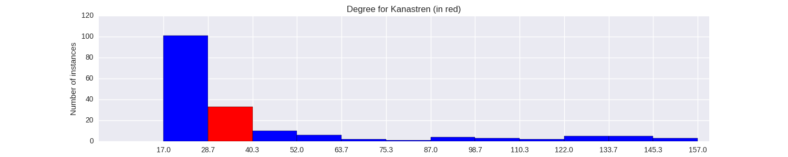

Quantiative Wayang Dictionary
Kanastren
Terms of address: Batari
Type: God
Origin: Java
Notes on the Sanskrit version: Not mentioned in the Indian Mahabharata.
Alternative names: Kanastri, Ganastri
Description in the Javanese version: Once Semar was being chased by two tigers. He found a hermit, [Manumayasa] and asked for his help. The hermit killed the tigers but in their deaths they became two beautiful women. Semar married one of them, Kanastren. And [Manumayasa] married the other one, [Kaniraras].
Found in the follwing lakon (stories):
Family relationships
Consorts: Semar
Offspring: Kamajaya, Wungkuam, Tambora, Wrahaspati, Siwah, Kuwera, Candra, Yamadipati, Surya, Darmanesti
More information
Takes the shape of: Sinduragen
Sources: Mengenal Gambar Tokoh Wayang Purwa, p. 139; Ensiklopedi Wayang Indonesia, pp. 203-104 (Vol. V); Rupa dan Karakter Wayang Purwa, pp. 138-139
Network measurements for Kanastren
| Measurement | Value | |
|---|---|---|
| Degree | 40.0 |  |
| Weighted Degree | 82.0 |  |
| Closeness Centrality | 0.564935064935 |  |
| Betweeness Centrality | 6.16920665229 |  |
| Eigenvector Centrality | 0.426747925378 |  |
{kind=link}
Characters in the same adegan as Kanastren
| Character | Link weight |
|---|---|
| Character | Link weight |